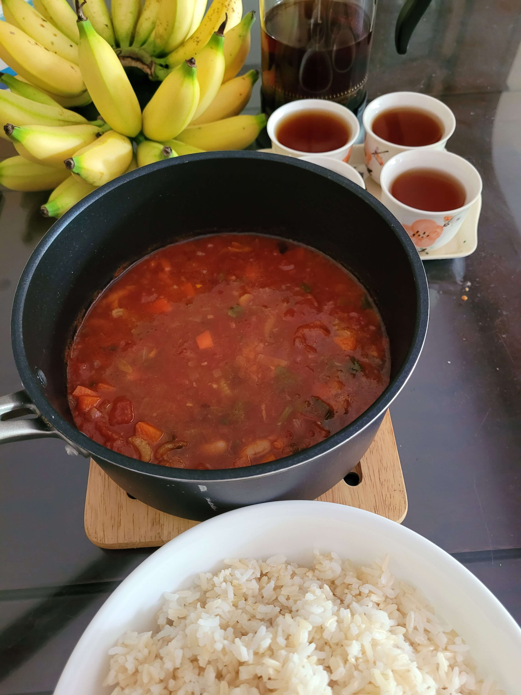

Thick vegetable soup à la Minestrone

Description
I suppose you could call this recipe a recipe for Minestrone. It does contain ingredients commonly used to make Minestrone e.g. beans, celery, carrot, and tomatoes. That said, it contains some Asian ingredients like fish sauce, mirin, and sake. Also, my family serves it differently. We don't put parmesan on top (nothing against it, it's just that parmesan is not something we normally have at hand). Finally, we like to serve this soup with pasta or rice (or both carbs in the same bowl).
Ingredients
This recipe serves four or five.
- One can of chopped tomatoes
- One stalk of celery
- One carrot
- Two onions
- Four cloves of garlic
- One cup of dried beans e.g. pinto, haricot, black-eyed
- Two fresh bay leaves (you can use dried ones if you don't have fresh)
- Pepper to taste
- One tablespoon of fish sauce
- One tablespoon of sake (omit if you have dietary restrictions against alcohol)
- One tablespoon of mirin (replace with a bit of sugar if you have dietary restrictions against alcohol)
- One-quarter cup of olive oil
Steps
- Soak the dried beans for a few hours, or overnight.
- Boil some water in a saucepan. Add the beans, and cook until somewhat soft (not mushy).
- Switch off the fire and set the beans aside. Don't throw away the water for cooking the beans. You will use some of it in the soup.
- Chop the onions and garlic finely.
- Cut the carrot and celery into small pieces.
- Heat the olive oil in a pot and add the onions. Fry them until they caramelise (about 20 to 30 minutes).
- Fry the chopped garlic along with the onions, for about a couple of minutes.
- Add the carrot and celery to the pot, and fry for about five minutes.
- Shred the fresh bay leaves and put them into the pot.
- Pour in the can of chopped tomatoes and stir.
- Add the cooked beans, along with a cup of the water that was used to cook the beans.
- Add the fish sauce, mirin, sake, and pepper into the pot. Stir well.
- Bring everything to a boil. Then, lower the flame, and simmer the soup for 15 to 20 minutes.
- If the soup is too thick for your liking, add more of the bean water to thin it out.
- Serve with rice and/or pasta.